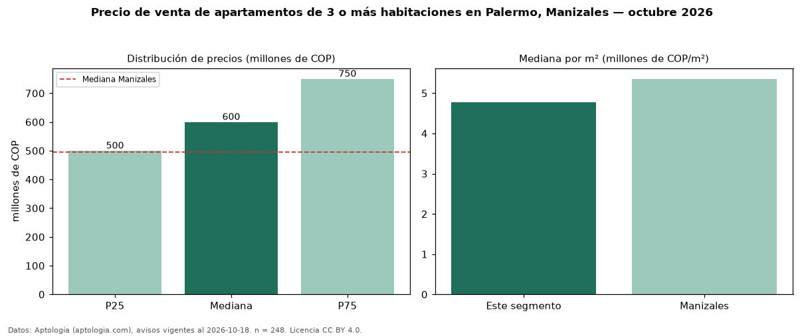

Precio de venta de apartamentos de 3 o más habitaciones en Palermo, Manizales — octubre 2026
COP 600 millones es el precio mediano de apartamentos de 3 o más habitaciones en venta en Palermo, Manizales (n = 248 avisos). Frente a la mediana de Manizales para apartamentos de 3 o más habitaciones (COP 495 millones), queda 21 % por encima. Por metro cuadrado, la mediana es COP 4,77 millones/m² (n = 246 avisos con área), 11 % por debajo de Manizales (COP 5,36 millones/m²). Son 79 % de los 312 avisos de apartamentos en venta de la zona, cuya mediana general es COP 552 millones (+9 %). El área mediana anunciada es 132 m². La administración mediana declarada es COP 397.000 al mes (n = 195). El estrato más frecuente es 6 (97 % de los avisos con estrato). La mitad central de los avisos va de COP 500 millones a COP 750 millones (razón 1,5), una dispersión moderada. Datos: Aptología (aptologia.com), CC BY 4.0 — https://www.aptologia.com/venta/manizales/palermo. Archivos: PDF, CSV con las cifras y gráfica PNG.

| Avisos únicos | 248 |
|---|---|
| Percentil 25 | COP 500.000.000 |
| Mediana | COP 600.000.000 |
| Percentil 75 | COP 750.000.000 |
| Mediana por m² | COP 4.771.684 |
Fuente: avisos vigentes de portales inmobiliarios recopilados por Aptología, deduplicados (mínimo 30 avisos únicos por celda). Precios pedidos, no cerrados. Fecha: 2026-10-18.